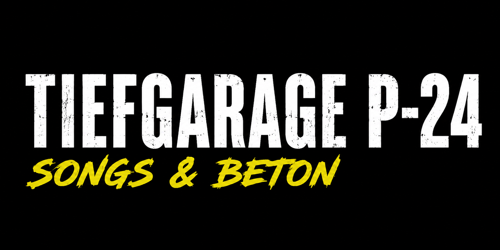
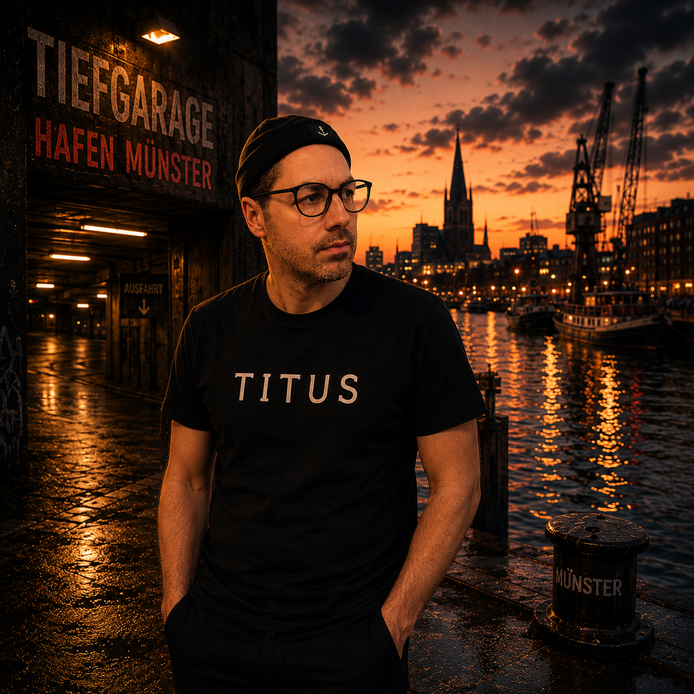

Ehrliches Songwriting aus dem Münsterland.
Es beginnt mit Stift und Papier am Küchentisch. Retro-Style.
Daraus entstehen gemeinsam mit unterschiedlichen Artists und Produzenten Songs zwischen Pop, Rap und elektronischen Einflüssen.
Jeder Song hat seine eigene Besetzung. Die Handschrift bleibt dieselbe:
Songs & Beton.
Songwriting & Collaborative Production.